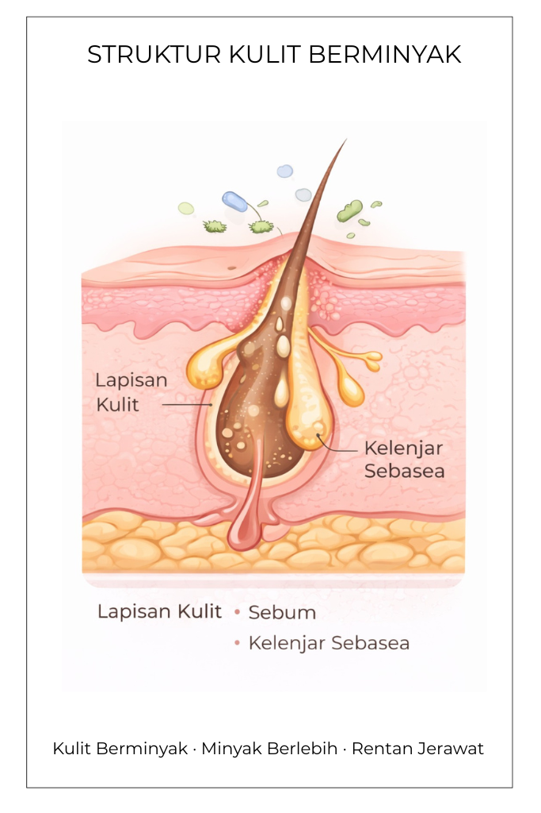

Tips Pola Hidup & Faktor Biologis
Pola hidup yang tepat membantu kulitmu tetap stabil, segar, dan bebas kilap

Berdasarkan jawabanmu, jenis kulitmu termasuk dalam kategori berminyak.
Kulit berminyak cenderung memproduksi sebum berlebih sehingga tampak mengilap, terutama pada area T-zone.

Pilih kandungan yang sesuai kebutuhan kulitmu dan gunakan secara bertahap untuk hasil terbaik
Menjaga hidrasi tanpa membuat kulit berminyak. Cocok dipakai pagi dan malam.
Membersihkan pori, mengontrol produksi minyak, dan memperbaiki tekstur kulit.
Mencerahkan dan melindungi kulit dari radikal bebas.
Mengontrol minyak, mencegah jerawat, dan menyamarkan noda.
Memperkuat skin barrier dan mengurangi iritasi.

Hindari over-cleansing dan hindari kombinasi retinol + AHA/BHA atau vitamin C + AHA/BHA agar tidak iritasi. Cuaca panas & lembap bisa membuat minyak meningkat.
Pilihan bahan herbal alami yang dapat mendukung rutinitas perawatan kulitmu

Gunakan rebusan daun sirih sebagai air bilasan wajah yang membantu membersihkan kulit dan mengurangi bakteri penyebab jerawat.

Gunakan ampas kopi sebagai scrub lembut dengan pijatan ringan untuk membantu membersihkan pori dan menghaluskan tekstur kulit.

Penggunaan rebusan daun sirih sebagai bilasan atau kompres antiseptik
membantu menjaga kebersihan permukaan kulit dengan menghambat
pertumbuhan mikroorganisme penyebab masalah kulit, tanpa
mengganggu fungsi alami lapisan pelindung kulit.
Sementara itu, ampas kopi berperan sebagai eksfoliator alami yang
membantu mengangkat sel kulit mati dan residu sebum berlebih di
permukaan kulit. Kombinasi keduanya mendukung regulasi produksi
minyak, menjaga pori tetap bersih, serta membantu kulit terasa lebih
segar dan seimbang secara biologis.
Pola hidup yang tepat membantu kulitmu tetap stabil, segar, dan bebas kilap